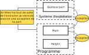

Imaginons que l'on souhaite mettre en place une classe Height qui gère une seule donnée : la hauteur (en mm).
xxxxxxxxxx// Gere une hauteur en mmclass Height{ public: // Attributs double _value; // en mm // Constructeur Height(double value) { _value = value; } // Methodes void add(double value) { _value += value; } void sub(double value) { _value -= value; } }On peut construire des objets de type Height via son constructeur en lui donnant une valeur de type double. Elle a deux méthodes, la méthode add qui permet d'ajouter des mm à la hauteur actuelle et la méthode sub qui permet d'en enlever.
A cette classe, on veut lui ajouter une contrainte, c'est que la valeur de la hauteur ne peut pas être négative, ce qui peut avoir du sens ici, sauf si tu as déjà croisé des personnes ayant une hauteur de -1,78 mètre.
Si on laisse la classe telle quelle, la contrainte peut tomber à l'eau de plusieurs manières :
int main(){ // On peut construire un objet en envoyant une valeur négative comme paramètre d'entrée
Height invalidHeight(-5000);
// On peut ajouter une valeur négative Height invalidHeight2(10); invalidHeight2.add(-20); // resultat : -10 // On peut soustraire une plus grande valeur que la valeur actuelle Height invalidHeight3(10); invalidHeight3.sub(20); // resultat : -10}Il faut maintenant trouver des solutions pour empêcher le code appelant (ici la fonction main) de réaliser de telles opérations.
La première solution qui pourrait venir en tête c'est de ramener la valeur à 0 lorsque la hauteur est négative. Comme ceci:
x
// Gere une hauteur en mmclass Height{ public: // Attributs double _value; // en mm // Constructeur Height(double value) { _value = value; if(_value < 0) { _value = 0; } } // Methodes void add(double value) { _value += value; if(_value < 0) { _value = 0; } } void sub(double value) { _value -= value; if(_value < 0) { _value = 0; } } };int main(){ Height height(-5000); // la valeur est égale à 0 Height height2(10); height2.add(-20); // la valeur est égale à 0 Height height3(10); height3.sub(20); // la valeur est égale à 0}De mon point de vue et de mon expérience, cette option n'est pas la meilleure parce que l'on va définir une valeur par défaut à l'intérieur de la classe dont le code appelant n'est pas au courant. Peut être que l'appelant n'est pas informé qu'envoyer -5000 au constructeur de la classe Height n'est pas conforme aux attentes, peut être que ce n'est pas écrit dans la documentation de la classe, ou encore qu'il n'avait pas envi de la lire. Dans tous les cas, le code doit parler de lui-même et affecter une valeur par défaut peut amener à une situation non attendue comme çà:
x
int main(){ Height height(-5000); // la valeur est égale à 0, l'appelant pense que c'est -5000 height.add(2000); // la valeur est égale à 2000 (0+2000), l'appelant pense que c'est -3000 if(height < -2000) { // operation A : celle que l'appelant s'attend à voir exécuter } else { // operation B : celle qui est réellement exécutée }}Alors l'exemple n'est pas des plus parlant, mais c'est un cas qui pourrait arriver et qu'il faut éviter. C'est ce qui nous amène à la seconde option : lever une exception.
Cette fois-ci on va vouloir arrêter l'exécution du programme lorsque la valeur de Height devient négative. On va utiliser un nouveau concept qui sont les exceptions. Avant d'en dire deux mots, voici un exemple de code:
x
// Gere une hauteur en mmclass Height{ public: // Attributs double _value; // en mm // Constructeur Height(double value) { _value = value; if(_value < 0) { throw new Exception("Value can not be negative"); } } // Methodes void add(double value) { _value += value; if(_value < 0) { throw new Exception("Value can not be negative"); } } void sub(double value) { _value -= value; if(_value < 0) { throw new Exception("Value can not be negative"); } } };int main(){ Height height(-5000); // Lance une exception, le programme s'arrête ici}Ne t'inquiète pas si tu ne connais pas les exceptions, çà fait partie des concepts que l'on doit voir un jour. Je vais expliquer ici globalement ce qu'il se passe. Lorsque la valeur devient négative dans le code ci-dessus, une exception est levée, c'est à dire qu'une nouvelle exception est créée et "jetée" (terme throw) en espérant que ce soir attrapé à un endroit du programme. C'est comme jeter une bouteille à la mer en laissant un message dedans, parfois quelqu'un l'attrape, lit le message et agit en conséquénce, parfois personne n'y prête attention et le monde s'écroule (on peut traduire çà dans notre cas par : le programme s'arrête).
Voyons voir comment çà se passe techniquement avec les exceptions. A l'endroit du code où l'exception est levée et jetée, le programme va :
Voici un petit dessin pour résumer ce qui a été dit:
 _include(guy_speaking,content="Et si jamais on ne veut pas que le système d'exploitation traite l'exception, comment on attrape l'exception dans le programme?")
Il existe en effet un moyen d'attraper une exception durant l'exécution du programme afin de traiter en interne l'erreur sans que le système d'exploitation mette son nez dans nos affaires. Tu en as peut être déjà entendu parler, c'est la commande try-catch. En voici un exemple avec le code ci-dessous:
x
int main(){ try { Height height(-5000); // Lance une exception, le programme s'arrête ici } catch(Exception &e) { std::cout << e.what() << std::endl; // Ce message est affichée si le constructeur de la classe Height lève un exception. } Height height2(30); // Cette instruction est exécutée même si la construction de l'objet précédent lève une exception}Dans le bloc try, on va attraper l'exception s'il y'en a une qui est levée et lancée dans le constructeur de Height. Si l'exception est attrapée, l'execution va sauter directement au bloc de code du catch et afficher le message d'erreur. Le programme ne va donc pas s'arrêter brutalement et le reste des instructions à la suite du bloc try-catch seront executées.
On a fait une belle introduction aux exceptions et si tu souhaites plus d'information à propos des exceptions, je t'invite à venir lire la fiche Exceptions.
_include(guy_speaking,content={Mais comment la personne sait qu'il ne faut pas envoyer une valeur négative en paramètre du contructeur de la classe Height?})En effet, il n'est pas possible de dire, dès la compilation du programme, que la méthode n'accepte pas de valeurs négatives. On pourrait croire que c'est une limitation du langage, mais le problème est bien plus complexe que çà, puisqu'on peut avoir des situations comme la suivante:
x
int main(){ double a = 0.0; std::cin << a; // On demande à la personne de rentrer une valeur au clavier, on ne sait pas d'avance quelle peut être la valeur de a (négative? positive?) Height height(a); // On ne peut pas prévoir dès la compilation que la valeur envoyée au constructeur de Height est invalide, on ne peut le savoir que durant l'exécution du programme.}On ne peut donc pas savoir quelle valeur est envoyée au constructeur ou aux méthodes de la classe Height. L'utilisation des exceptions a tout de même l'avantage d'éviter des comportements indéfinis comme on l'avait montré précédemment avec la valeur 0 par défaut de l'attribut _value lorsqu'elle devient négative.
Il existe une autre façon de prévenir le code appelant qu'il y a eu une erreur sur la valeur dans la classe Height. On peut renvoyer un code d'erreur comme ci-dessous:
x
// Gere une hauteur en mmclass Height{ public: // Attributs double _value; // en mm // Constructeur Height(double value) { _value = value; if(_value < 0) { // Impossible de renvoyer un code d'erreur ici, puisque c'est interdit dans le constructeur } } // Methodes int add(double value) { _value += value; if(_value < 0) { return -1; } return 0; } void sub(double value) { _value -= value; if(_value < 0) { return -1; } return 0; } };int main(){ Height height(-5000); // Pas possible de vérifier le code d'erreur pour le constructeur puisqu'il ne peut pas renvoyer de valeur Height height2(10); auto error = height2.add(-20); // Une erreur a été détecté et le code -1 a été renvoyé pour indique qu'il y a eu une erreur if(error == -1) // Vérification qu'il y a eu une erreur { std::cout << "Error height is invalid" << std::endl; }}Le principe est de renvoyer par exemple -1 lorsqu'il y a une erreur et 0 lorsque tout se passe bien.
Cette gestion des erreurs pose au moins deux problèmes. Le premier c'est que le constructeur ne peut pas renvoyer de valeur spécifique puisqu'il renvoie déjà l'objet construit. En effet, le code suivant ne fonctionnera pas :
x
int main(){ int error = Height(-5000); // On est en train de vouloir affecter un objet de type Height à une variable de type int.}On est donc obligé de lever une exception dans le constructeur, ce qui voudrait dire que l'on utilise un mécanisme de gestion d'erreur différent lorsqu'on est dans le constructeur et lorsqu'on est dans les méthodes. Tu peux être sûr que celui qui utilise la class Height va être perdu, mais admettons que l'on garde le système du code d'erreur à retourner dans les méthodes. On est en train de laisser la responsabilité à l'utilisateur de gérer les erreurs produites à l'intérieur de la méthode appelée de la classe et on est pas sûr du tout qu'il le fasse. Il pourrait tout à faire ignorer la vérification de ce qui est retourné par la méthode et passer à autre chose. Il laisserait alors filer un potentiel risque que le programme crash à un autre endroit du code à cause d'une valeur négative dans l'objet Height. Tu imagines bien les dégâts si la hauteur correspond à la hauteur que doit atteindre une fusée avant de larguer les moteurs... on va donc éviter l'option du code d'erreur. Au passage c'est une technique pas mal utilisée en langage c puisque les exceptions n'existent pas.
Bref, je ne serai que trop conseiller d'utiliser l'option des exceptions pour gérer les erreurs lorsque celles-ci ne sont pas vraiment attendues. Attention de ne pas en abuser pour tout et n'importe quoi. Après ce grand apparté sur la gestion d'erreur, revenons en à l'encapsulation des données.
Et bien... non, désolé de décevoir, mais on arrive à un point fondamental qui est l'encapsulation et pour comprendre ce que c'est, voici un exemple de code qui va faire capoter tous nos efforts.
x
int main(){ Height height(10); height._value = -5; // On a le droit de faire çà avec la classe actuelle de Height}Arf, les exceptions ne vont pas vraiment nous aider ici, puisque c'est directement l'attribut qui est modifié.
Il est tout a fait possible d'empêcher le code de directement modifier l'attribut d'une classe en changeant sa visibilité. Actuellement la visibilité de _value est public comme tu peux le remarquer au tout début de la classe Height. Tout ce qui se trouve en dessous de public:, que ce soit attributs, constructeurs ou méthodes, est accessible depuis l'extérieur de la classe. Typiquement dans la fonction main du code ci-dessus, on a appelé le constructeur de la classe Height (accès public au constructeur) et on a modifié son attribut _value (accès public à l'attribut).
Qui dit visibilité public, dit son contraire, soit la visibilité private. private permet tout simplement de restreindre l'accès (attribut, constructeur, méthode) à l'intérieur d'une classe et donc d'interdire tout accès à l'extérieur. Le compilateur va s'occuper de vérifier que les champs public et private soient bien respectés dans tout le code et de raler s'il trouve des accès qui ne sont pas permis. Essayons de changer la classe Height en passant l'attribut en accès private tout en gardant ce qu'on a écrit avant dans la fonction main.
x
// Gere une hauteur en mmclass Height{ private: // Attributs // l'attribut _value est maintenant privée, et n'est plus accessible depuis l'extérieur de la classe double _value; // en mm public: // Le constructeur et le méthodes continuent d'être publiques et sont donc accessibles depuis l'extérieur de la classe // Constructeur Height(double value) { [...] } // Methodes void add(double value) { [...] } void sub(double value) { [...] } };int main(){ Height height(10); height._value = -5; // On a plus le droit de faire çà, l'attribut _value est private, le compilateur renvoie : "error: ‘double Height::_value’ is private within this context"}Attention de bien redéfinir public avant le constructeur, sinon le constructeur et les méthodes add et sub deviendront privées et ne seront plus accessibles à l'extérieur de la classe comme l'est l'attribut _value.
Ce que l'on vient de faire c'est d'encapsuler l'attribut _value dans la classe Height. Plus personne n'a accès à l'attribut à part la classe elle même, c'est à dire dans ses constructeurs et méthodes. Le plus grand intérêt de faire çà c'est de garantir que la valeur de l'attribut reste valide tout au long de la vie de l'objet dans le programme. De cette manière, on est sûr que lorsqu'on lira la valeur _value de l'objet de type Height, on est sûr qu'elle aura du sens et que ce ne sera pas n'importe quoi.
_include(guy_speaking,content={Mais du coup, c'est quoi l'intérêt d'avoir un constructeur ou une méthode privée?})En ce qui concerne les constructeurs, il y a plusieurs raisons et ce ticket l'explique très bien : Can a constructor be private in C++ ?. Attention, ce ne sont que des exemples d'utilisation, cela ne veut pas dire que ce sont des exemples à reproduire :).
Contrairement aux constructeurs privés qui sont plus atypiques, on rencontre des méthodes privées beaucoup plus régulièrement. La raison vient essentiellement d'une bonne factorisation du code (éviter les duplications de code). Je met un exemple de code sans et avec factorisation en utilisant des méthodes privées.
x
class Clock{ private: double _seconds; double convertInSeconds(double hours, double minutes, double seconds) { return hours * 3600 + minutes * 60 + seconds; } public: Clock(double hours, double minutes, double seconds) { _seconds = convertInSeconds(hours, minutes, seconds); } void addHours(double hours) { _seconds += convertInSeconds(hours, 0, 0); } void addMinutes(double minutes) { _seconds += convertInSeconds(0, minutes, 0); } void addSeconds(double seconds) { _seconds += convertInSeconds(0, 0, seconds); // L'appel de la fonction computeSeconds n'est pas forcément utile ici }}En effet, on a empêché l'accès à la valeur pour l'écriture d'une nouvelle valeur, mais on a aussi par la même occasion empêcher la lecture de la valeur. On ne peut donc pas par exemple afficher la hauteur dans la fonction main.
Pour çà, on va utiliser des petites fonctions qui sont utilisées à peu près partout dans les langage POO. Peut-être que tu les as déjà vu, ce sont ces petite méthodes qui sont souvent par pair : les get et les set. Comme on veut donner l'accès en lecture à _value, on peut donc écrire un petit accesseur getValue afin de retourner une copie de _value d'un objet de type Height.
x
// Gere une hauteur en mmclass Height{ private: // Attributs double _value; // en mm public: // Constructeurs [...] // Accesseurs double getValue() { return _value; // renvoie une copie de la valeur } [...] // Methodes [...]};int main(){ Height height(10); std::cout << "La taille de la tour eiffel, version miniature fait " + height.getValue() << std::endl;}La valeur renvoyée par la méthode getValue est une copie de la valeur _value. C'est donc impossible que le code appelant puisse modifier la valeur de _value. Je te propose de faire le test chez toi pour voir ce que le compilateur te dit.
Si on veut donner un accès direct en écriture à l'attribut _value, on peut écrire une petite méthode setValue tout en faisant bien attention de respecter les contraintes liée à l'attribut (dans notre cas, la valeur ne doit pas être négative).
x
// Gere une hauteur en mmclass Height{ private: // Attributs double _value; // en mm public: // Constructeurs [...] // Accesseurs double getValue() { return _value; // renvoie une copie de la valeur } void setValue(double value) { _value = value; // renvoie une copie de la valeur if(_value < 0) { throw new Exception("Value can not be negative"); } } [...] // Methodes [...]};int main(){ Height height(10); std::cout << "La taille de la tour eiffel, version miniature fait " + height.getValue() << std::endl;}Une petite règle commune en cpp à propos des accesseurs, il faut généralement commencer par écrire set ou get suivi du nom de l'attribut auquel on veut donner l'accès, ici Value (on utilisant la règle du "snakeCase").
}) _include(attention,content={L'utilisation des set/get ne doit pas être automatique pour tous les attributs. Il ne faut les utiliser que lorsque çà a du sens de les exposer au dehors de la classe. Pour la classe Height, on aurait très bien pu laisser la méthode set en private puisqu'on a déjà les méthodes add et sub pour modifier la valeur de l'attribut.
})Voici la classe "presque" finale:
x
// Gere une hauteur en mmclass Height{ private: // Attributs double _value; // en mm public: // Constructeur Height(double value) { _value = value; if(_value < 0) { throw new Exception("Value can not be negative"); } } // Accesseurs double getValue() { return _value; } void setValue(double value) { _value = value; if(_value < 0) { throw new Exception("Value can not be negative"); } } // Methodes void add(double value) { _value += value; if(_value < 0) { throw new Exception("Value can not be negative"); } } void sub(double value) { _value -= value; if(_value < 0) { throw new Exception("Value can not be negative"); } }};Tu remarques pas un peu de redondance dans ce code? La condition + l'affectation d'une nouvelle valeur à l'attribut _value est partout : dans le constructeur, la méthode setValue, la méthode add et sub. On pourrait factoriser tous ces bouts de code et ne les mettre que dans un endroit de la classe, une méthode, et d'appeler cette méthode à la place. La méthode setValue semble convenir comme endroit pour factoriser. Voici le code plus propre et surtout beaucoup plus clair:
x
// Gere une hauteur en mmclass Height{ private: // Attributs double _value; // en mm public: // Constructeur Height(double value) { setValue(value); } // Accesseurs double getValue() { return _value; } void setValue(double value) { _value = value; if(_value < 0) { throw new Exception("Value can not be negative"); } } // Methodes void add(double value) { setValue(_value + value); } void sub(double value) { setValue(_value - value); }};Ne t'inquiète pas si tu n'as pas eu ce réflexe. c'est quelque chose qui s'apprend et qui devient presque automatique au bout d'un moment.
Dans ce chapitre on a vu